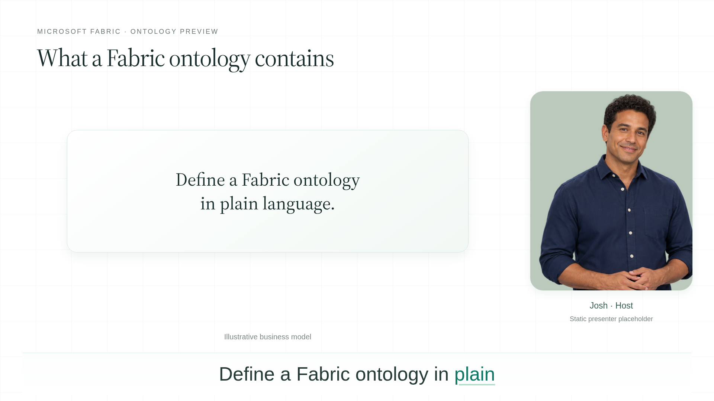
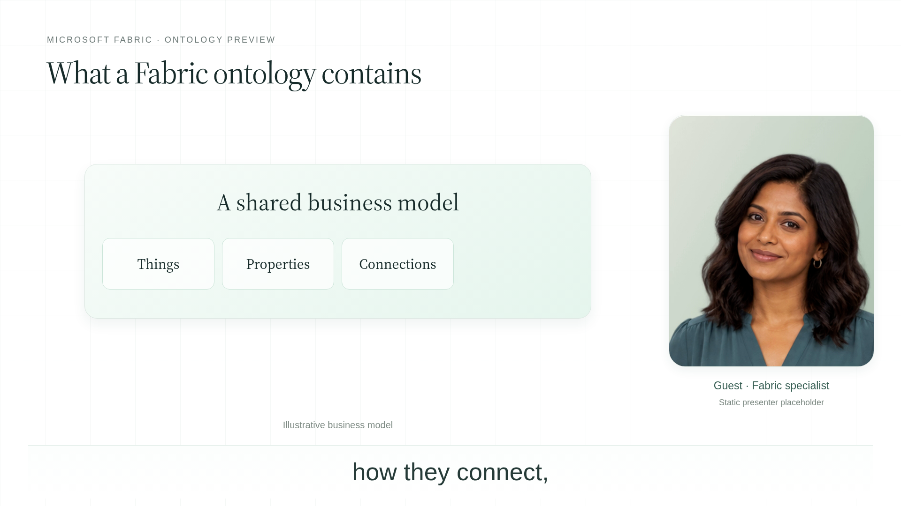
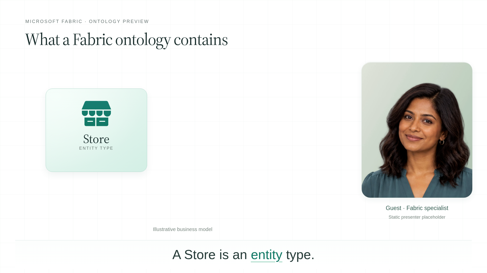
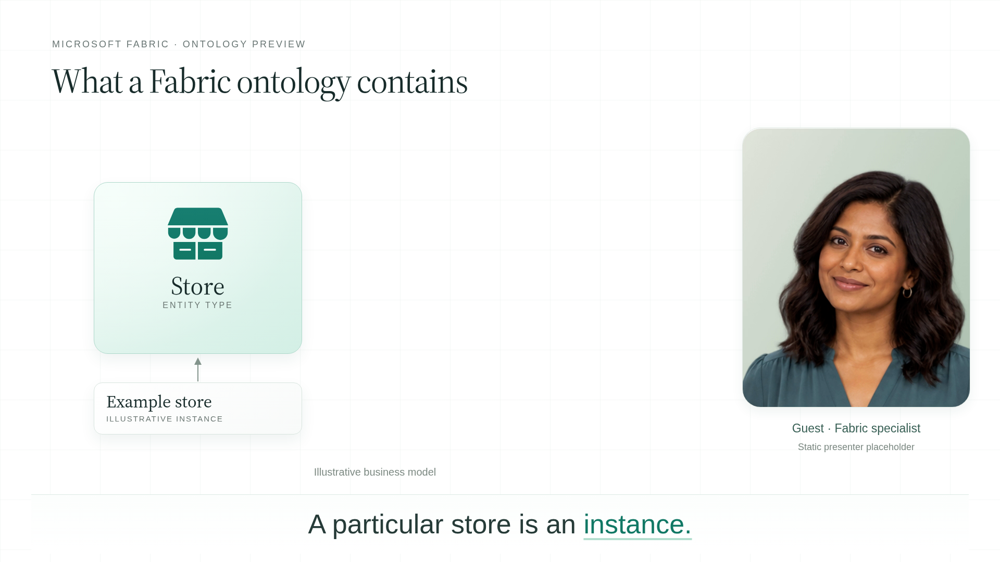
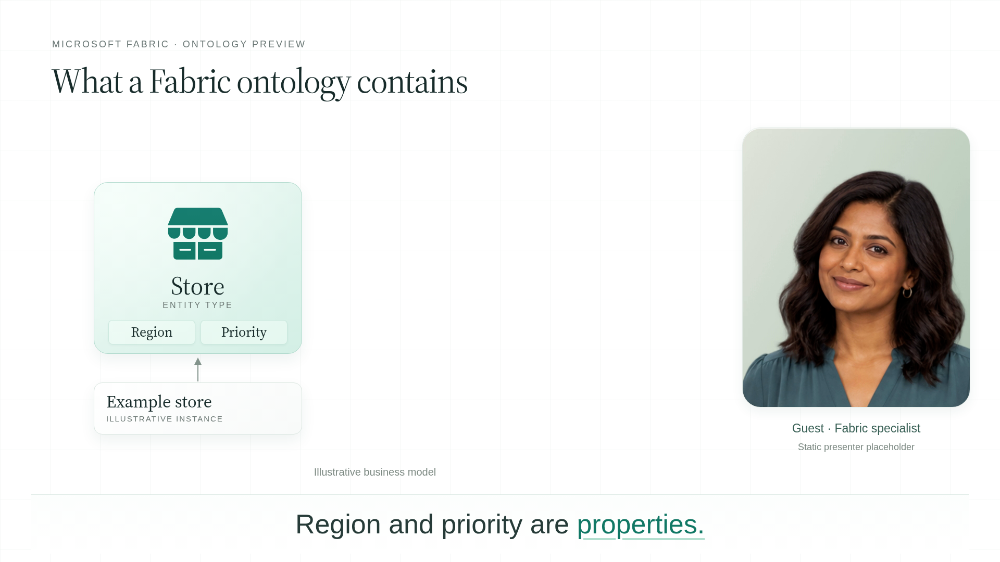
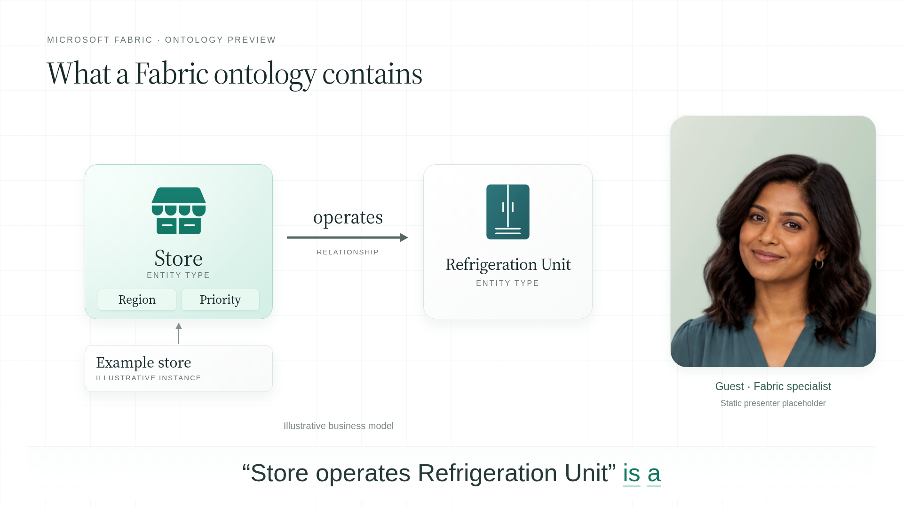
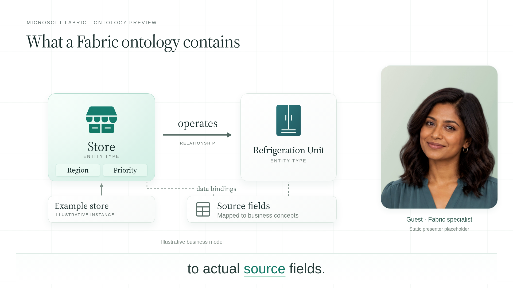
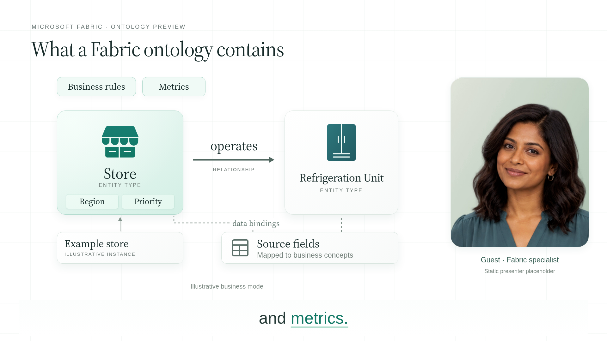

Exact opening exchange of section 3 · Host and guest preview voices · Static fictional presenter placeholders · Animated supporting graphics · Bottom captions
Download video · Read exact dialogue · Caption file








The portrait images are placeholders, not lip-synced talking-head recordings.